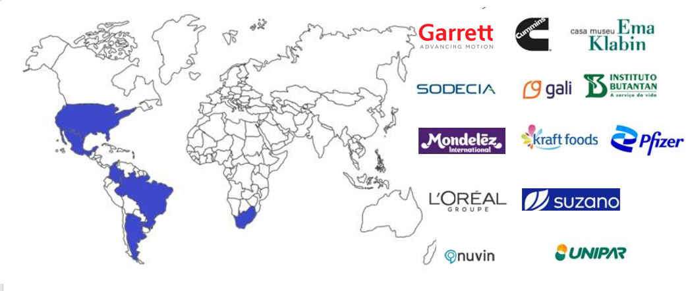

Ajudamos empresas a obter e manter certificações ISO com diagnóstico técnico, auditorias e planos de ação claros — reduzindo riscos legais e fortalecendo a credibilidade do seu negócio.
Quando faz sentido nos chamar:
Nosso trabalho apoia o atendimento das exigências legais com uma abordagem prática e participativa — sem burocracia excessiva, sem enrolação.
Sim. Trabalhamos remoto-first, mas realizamos visitas técnicas programadas sempre que o diagnóstico exigir.
Diagnóstico: 15–30 dias. Projetos completos de implantação: 90–120 dias.
Todo o Brasil — a maior parte do trabalho é remota, com deslocamento pontual quando necessário.
Sim. Fazemos auditoria interna e preparação para recertificação.

Simplificar o caminho das empresas brasileiras rumo à conformidade e à excelência em gestão, tornando processos de certificação ISO acessíveis, práticos e orientados a resultado real — não apenas ao papel.